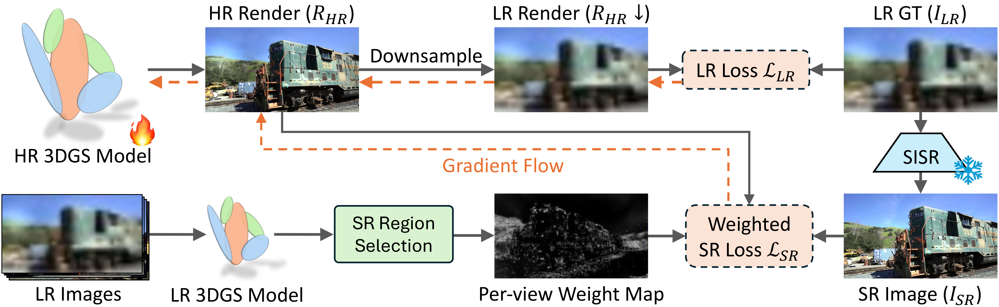

Method
Prior approaches that integrate super-resolution (SR) into the 3DGS training pipeline apply it uniformly across every image, even in regions that are already well-supervised by nearby LR views. Since generated details are not necessarily multi-view consistent, injecting them everywhere can introduce geometric or texture inconsistencies, leading to blurred regions in the model.
SplatSuRe addresses this through a selective, geometry-aware strategy that determines where SR should influence optimization. Instead of treating all pixels equally, we exploit the multi-view sampling pattern of each Gaussian to determine which regions are sufficiently constrained by LR observations and which require additional SR guidance. To achieve this, we introduce:
- a per-Gaussian score that measures how well it is sampled across training views, and
- a per-view weight map that highlights undersampled areas while suppressing SR where LR supervision is already reliable.
Incorporating these weight maps into a combined LR–SR objective allows detail to be selectively injected where it is beneficial while preserving multi-view consistency elsewhere.
Gaussian Fidelity Score
Images capturing a scene do not contribute equal amounts of high-frequency information for 3D reconstruction. A nearby low-resolution (LR) image can capture finer structure than a distant high-resolution (HR) view. SplatSuRe leverages this disparity to identify which 3D regions are already well-supervised and which require additional guidance from super-resolution (SR).

For each Gaussian \( \mathcal{G}^i \), we measure its screen-space footprint \( r^i_t \) in every training view \( t \). These radii describe how finely each Gaussian is observed across cameras. We then compute its sampling ratio:
\[ r^i_{min} = \min_{t\in T}{r^i_t}, \qquad r^i_{max} = \max_{t\in T}{r^i_t}, \qquad \rho^i = r^i_{max}/r^i_{min}. \]
A high ratio \( \rho^i \) indicates that the Gaussian is sampled at varying frequencies across views, meaning some views observe it with high fidelity and can supervise the others. A ratio close to one indicates uniform sampling across views, indicating that this region requires SR to add generated details. We convert this ratio into a normalized fidelity score:
\[ \mathrm{score}_{\mathcal{G}^i} = \sigma\!\left( \frac{\rho^i - \tau}{k} \right), \]
where \( \tau \) is a threshold and \( k \) controls transition smoothness. Gaussians in less than three views are assigned a score of zero. Higher scores correspond to Gaussians that are already well-captured by LR supervision, while lower scores identify regions where SR should be applied more heavily.
Super-Resolution Region Selection
Supervising high-resolution model updates requires pixel-wise weight maps for each training view. For a given training view \( t \), we identify the set of Gaussians whose maximal radius occurs in its rendered view:
\[ \mathcal{M}(t) = \{\mathcal{G}^i\ |\ t = \arg\max_{t \in T}r^i_t \; \forall i \in N \}. \]
These are Gaussians that do not receive higher-frequency information from another view. We splat both the Gaussian fidelity scores and this closest-view mask to form a raw weight map:
\[ W'_t = \bigl(1 - \mathrm{Render}(\mathrm{score}_{\mathcal{G}})\bigr) + \mathrm{Render}(\mathbf{1}_{\mathcal{M}(t)}(\mathcal{G})). \]
The first term directs SR toward undersampled regions with low fidelity scores, while the second targets areas best observed by the current view because no other camera provides higher-resolution information. After normalization, the resulting weight map \( W_t \in [0,1] \) precisely identifies where SR should contribute during training, enabling SplatSuRe to enhance detail in poorly sampled regions while preserving multi-view consistency in well-supervised areas.